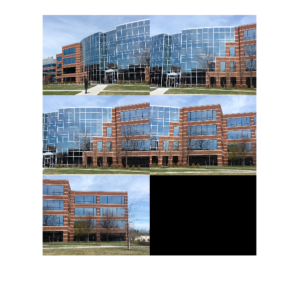
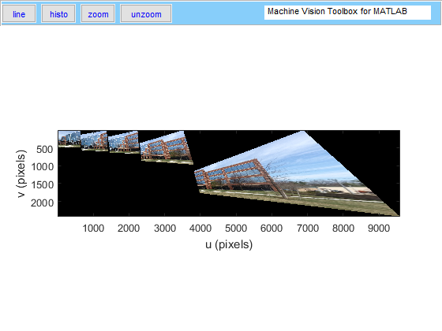
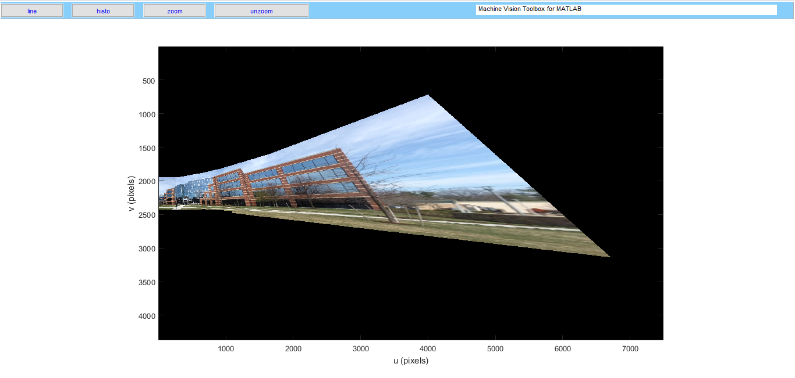

Contents
function Im_panoramic = Panoramic( path, varargin )
PANORAMIC
Panoramic esta função retorna a uma imagem panoramica formada pelas imagens do dataset que estão na pasta do path.
As Imagens devem estar em sequncia para que a função funcione corretamente
Im = Panoramic( path )
onde Im = imagem path = string do diretório do data set
pode se alterar o tamanho processado da imagem usando:
Im = Panoramic( path, 'size', size_vec )
Default [480 640]
pode se mostrar parte do processamento na tela usando:
Im = Panoramic( path, 'display')
Default false
Mudar o numero de matches:
Im = Panoramic( path, 'matches', num_matches)
Default 300
Mudar o parâmetro do filtro threshold usado na para criar a matriz de homografia
Im = Panoramic( path, 'threshold', num_threshold)
Default 0.3
Centralizar o panorama
Im = Panoramic( path, 'center')
Default false
Também pode se usar mais de um comando (não importa a ordem);
Im = Panoramic( path,'display','size', size_vec,'threshold', num_threshold, 'matches', num_maches)
Valores default
num_threshold = 0.3; num_matches = 300; imreadsize = [480 640]; dispim = false; center = false;
Novos valores
comand = {};
Manipular as diferentes possiveis entradas da função
if nargin > 1 if isa(varargin{1},'cell') comand = varargin{1}; [~, buf] = size(varargin{1}); else [~, buf] = size(varargin); for i = 1:buf comand{i} = varargin{i}; end end for i = 1 : buf if ischar(comand{i}) if isequal(comand{i},'display') %se display dispim = true; elseif isequal(comand{i},'size') % se Size imreadsize = comand{i+1}; i = i+1; elseif isequal(comand{i},'matches') % se Matches num_matches = comand{i+1}; i = i+1; elseif isequal(comand{i},'threshold') % se Threshold num_threshold = comand{i+1}; i = i+1; elseif isequal(comand{i},'center') % se Center center = true; else % Erro caso os comandos forem inválidos error('Invalid Input'); end end end end
Verificação do Caminho
try buildingScene = imageSet(path); if dispim disp('reading images') montage(buildingScene.ImageLocation); end catch ME disp('Wrong path'); rethrow(ME) end
reading images Warning: Image is too big to fit on screen; displaying at 33%
Leitura da Imagem 1 do Data set
I{1} = imresize(iread(buildingScene.ImageLocation{1}, 'double'),imreadsize );
% Busca das features de superficie da imagem 1
Sf = isurf(I);
% Matriz de homagrafia da imagem 1 é identidade já que ela não sera distorcida
H{1} = eye(3);
% Matriz de homagrafia acumulada inicial
tforms{1} = eye(3);
% Imagem 1 distorcida será igual a imagem 1 sem a distorção, visto que ela
% sera a base para todas as outras
newim{1} = I{1};
% Pontos de offset da imagem 1 na figura final
points{1} = [0 0];
extracting SIFT features for 1 greyscale images 1075 corners found (0.3%), 1075 corner features saved .
Procura de features e a relação entre as imagens
if dispim disp('finding features and matches'); end for i = 2:buildingScene.Count % Atualiza as variaveis para o proximo loop Iant = I{i-1}; Sfant = Sf{i-1}; % Abrir Imagem n I{i} = imresize(iread(buildingScene.ImageLocation{i}, 'double'), [480 640]); % Procurar fetures na Imagem n Sf{i} = isurf(I{i}); % Faz o match entre as features da imagem anterior, e a atual -> I(n) m{i} = Sf{i}.match(Sfant, 'top', num_matches); % Calcula a matriz de homografia etre os pontos das duas imagens [H{i} val{i} val2{i}] = ransac(@homography,[m{i}.xy_], num_threshold); end
finding features and matches 1127 corners found (0.4%), 1127 corner features saved Warning: ransac reached the maximum number of 2000 trials; probability of including an outlier is 0.859118 try running ransac again 1116 corners found (0.4%), 1116 corner features saved 1174 corners found (0.4%), 1174 corner features saved Warning: ransac reached the maximum number of 2000 trials; probability of including an outlier is 0.999407 try running ransac again 1037 corners found (0.3%), 1037 corner features saved Warning: ransac reached the maximum number of 2000 trials; probability of including an outlier is 0.987572 try running ransac again
if center %imagem central nuim = buildingScene.Count/2; if nuim ~= round(nuim) nuim = round(nuim); end % Arrumando a ordem das matrizes de homografia H(1:nuim-1) = H(2:nuim); H{nuim} = eye(3); newim{nuim} = I{nuim}; tforms{nuim} = eye(3); % Calculo da matriz de homografia acumulada pra esquerda for i = nuim:-1:2 tforms{i-1} = H{i-1}^-1*tforms{i}; end % Calculo da matriz de homografia acumulada pra direita for i = nuim+1:buildingScene.Count tforms{i} = tforms{i-1}*H{i}; end else for i = 2:buildingScene.Count % Atualiza a Matriz de homografia acumulada tforms{i} = tforms{i-1} * H{i}; end end % Transformando as imagens for i = 1:buildingScene.Count % Faz a homografia da imagem I(n) -> newim(n) [bufim points{i}] = homwarp(tforms{i},I{i},'full'); % Tira NaN das imagens distrocidas bufim(isnan(bufim)) = 0; newim{i} = bufim; end if dispim % Display das imagens finais figure, idisp(newim); end
Setando o Tamanho da imagem final
% [u1,v1,~] = size(I{end}); % [y,x,~] = cellfun(@size, newim); % temp = cell2mat(points); % Definir o ponto inicial do panorama if center % off = [ (sum(x - temp(1:2:end))/2) - v1/2, max(y) - u1]; % Panoramic = zeros( max(y) + max(y) - u1 , sum(x - temp(1:2:end))); else % off = [1, (max(y) - u1)]; % Panoramic = zeros( max(y) + (max(y) - u1), sum(x - temp(1:2:end))); end
Montagem do panorana
for i = 1:buildingScene.Count % mask{i} = homwarp(tforms{i},ones(u1, v1),'full'); % mask{i} = mask{i} >= 1; % wmask{i} = 1 - mask{i}; end for i = 2:buildingScene.Count % Panoramic = ipaste(Panoramic, newim{i}, points{i}+off, 'add'); % Panoramic = ipaste(Panoramic, mask{i-1}, points{i-1}+off, 'add'); % Panoramic = adjust(Panoramic); % Panoramic = ipaste(Panoramic, newim{i-1}, points{i-1}+off, 'add'); end if dispim figure, idisp(Panoramic); end Im_panoramic = Panoramic;
É tembém possivel fazer o panorama centralizado, porém ele não encaixa as imagens tão bem quanto o não centralizado

end